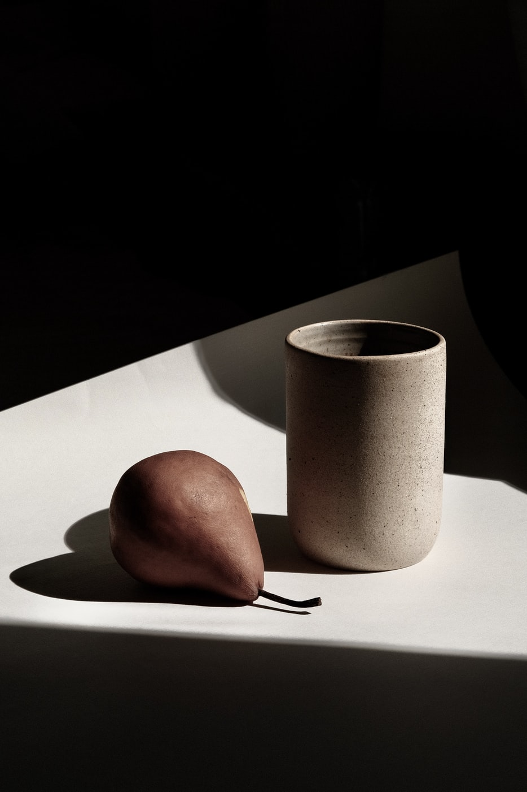

“Good design is always marked by great consistency”
Paul Spehr, the man behind Berlin-based graphic design studio Studio Spehr, has built a practice with a strong focus on book design. Working for a variety of cultural institutions and collaborating with a handful of Germany’s formidable creative publishers, Paul is best known for designing art catalogues and photobooks. Besides this, however, he also dabbles in corporate design as well as creating logos and exhibitions, all while teaching at the University of Hanover. With a range of printed objects under his belt, Paul’s work is clear and beautifully framed. He doesn’t think of his work as having a signature style so to speak, referring to his process as something that comes naturally, step by step. He does, however, have established working strategies that contribute towards a healthy creative process. One of these strategies being discussion, particularly with people he works well with. Timo Hinze from Studio Super Computer, for example, is a regular collaborator.
As good friends, the pair like to discuss their tastes, interests and opinions in design. “Our method is to talk the thing through but leave the concrete design apart,” Paul tells us. The discussion, in turn, revolves firmly around the aim of the project, the client and the final outcome. They judge the conversation almost like a competition with the best idea winning in the end. Once the winner has claimed their place, most of the time, there are no more questions around the style of the design as it leads on from the winning discussed idea.